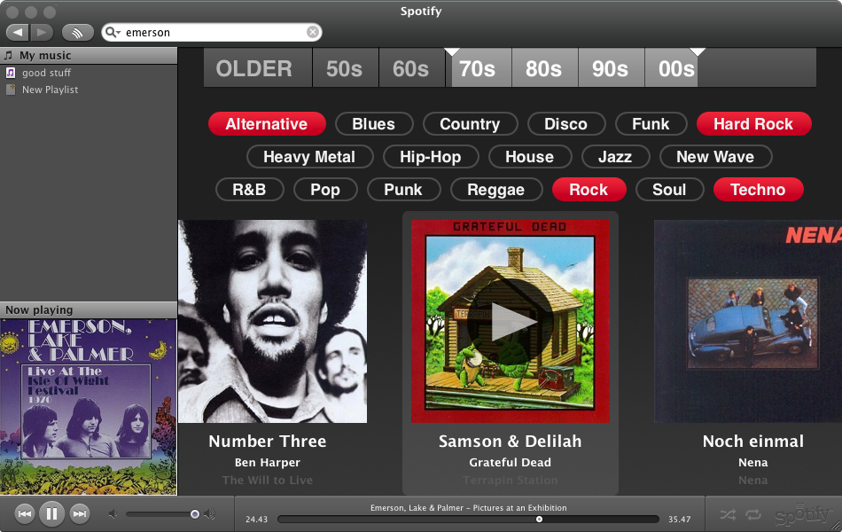

Woah - Spotify is pretty cool.
I had the opportunity to check out a beta version of Spotify recently, and I am really liking what I am seeing. Spotify is a music service that lets you listen to music on demand from a large number artists.

Spotify lets you create Pandora-like radio stations based upon a favorite artist. Instead of using the music genome to find similar tracks as Pandora does, and instead of using the wisdom of the crowds to populate their radio stations like last.fm does, they use the All Music 'similar artists' data to populate their radio stations. Spotify makes good use of the AMG data too, they show artist bios, photos, and album art.
Spotify also has a genre/era based radio. You can choose from a set of 18 top level genres, and narrow down the year of interest to give you a focused, but artist independent radio station.

Any
song that you see in Spotify, you can play instantly. Apparently
Spotify has (or is working on) arrangements with the labels to allow for
this playback on demand. The playback was solid, good quality
audio with minimal dropouts. It compared well to my experience with
other streaming services like last.fm or Pandora. Spotify also lets you
create playlists of tracks. Playlists are saved and you can play them
back at anytime. Spotify may also be able to provide persistent URLs for songs ... something that the web has been needing for quite a while.
The next generation of music services are going to be all about giving listeners music on demand. Services like Spotify, Finetune, Deezer
no longer are constrained by internet streaming rules - you can play
songs by any artist at anytime. Soon the more established services
like last.fm and Pandora will start to seem old fashioned - as they
conform to the rather restrictive rules about internet radio enforced by
SoundExchange.
wow, this looks very interesting. Is there a way for me to try it out myself?
Posted by Brad on November 17, 2007 at 11:27 AM EST #
Yep, Spotify actually rocks.
One of the best music solutions i've seen in my life.
Some features missing so far, but i know they are working on it.
When they open it up to the public it will definitely become one of the most popular music apps.
Posted by Noim Porta on November 21, 2007 at 06:44 AM EST #